Mr. PinPin / Chapter 02 / Camera notebook
Chapter 2: From Landscape to Story
The complete sixteen-scene camera and character journal.
23 of 23 images generated. Generated candidates for the Chapter 2 adaptation; visual judgments and caveats are recorded below.
Generation 1 / Reading position 2
Under the Silver Leaves
The meadow becomes an intimate, hedgehog-sized world on the way to the elder.
Camera. Place the camera 8 cm above the meadow soil beside the trail. Look through a loose arch of silver-backed leaves, with the route and distant knoll beyond.
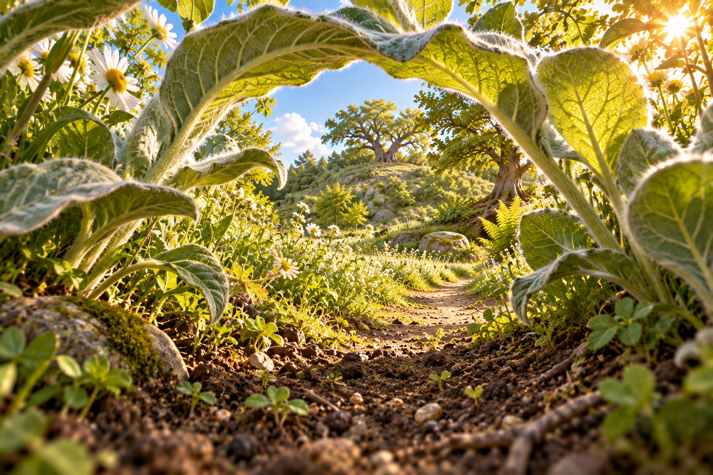
What I See
The low leaf-window camera has strong foreground parallax and clearly visible silver hairs and veins. The crown oak, base oak and approach trail remain recognizable beyond the opening. No fauna visible. The arch is more geometrically complete than an ordinary random leaf cluster, a storybook staging choice; scale must be checked when PinPin is added. Bright sunlit hairs approach white, but the leaf surfaces retain green texture.
Markdown record · Full-resolution image
{kind=link}
Exact Prompt
Move the camera off the reference's meadow path and down to just 8 cm above the soil at its edge, about 30 cm from a loose arch of broad silver-backed leaves. Look THROUGH that natural arch using a close wide 28mm view: detailed leaf veins and fine hairs at the upper edges, dark fresh soil below, a clear empty oval opening in the middle about 25 cm across. Beyond the opening we glimpse the winding trail and the same distant oak-crowned hill softly, without heavy blur. This is a tiny hedgehog-scale passage beside the trail, not a giant cave or a human-sized tunnel. Morning sun touches the translucent silver leaf edges from the right. Keep the middle opening and its ground unoccupied. Landscape-only environment plate: plants, soil, stone and sky, with no animals, birds, insects or characters. Warm dimensional children's-book woodland, soft natural highlights and detailed green shadows. Single landscape 1536x1024, no text or panels.
References
- shot-02.png: Location and framing reference; inspect before generation.
{kind=link}
Generation 2 / Reading position 6
Looking Up to Listen
The elder says the wind and rustling leaves bring news to those who listen.
Camera. From beside the burrow, tilt the camera nearly 85 degrees upward through the oak canopy.
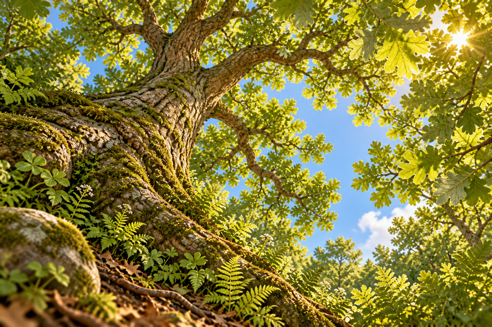
What I See
A convincing near-ground upward view: roots and trunk sweep up the left, with blue sky and overlapping oak leaves above. No fauna visible. The composition has a pronounced diagonal roll and is less nearly vertical than the requested 85 degrees, but it offers a distinctly different listening perspective. The veins of the lit leaves remain visible; direct sun at the upper right is bright by design.
Markdown record · Full-resolution image
{kind=link}
Exact Prompt
We are still beside the burrow oak in the reference. Put the camera on the ground beside its left root and tilt it almost straight UP, about 85 degrees, with a 24mm view. The same rough oak trunk rises diagonally from lower left and branches overhead into an airy canopy. Silver-green leaf undersides catch the breeze; layered green leaves frame an irregular opening of clear BLUE sky. Individual leaves turn and overlap, making the wind visible without painted motion lines. Let a little warm morning sun slip between leaves from the right, but retain the veins and color in bright foliage. This is the quiet view a listening hedgehog would see above its head. Landscape-only environment plate: plants, soil, stone and sky, with no animals, birds, insects or characters. Warm dimensional children's-book woodland, soft natural highlights and detailed green shadows. Single landscape 1536x1024, no text or panels.
References
- shot-03.png: Location and framing reference; inspect before generation.
{kind=link}
Generation 3 / Reading position 8
At the Elder's Eye Line
A closer view gives the elder's words about responsibility and ancestry room to breathe.
Camera. Move to 35 cm in front of the left mossy stone, lens 12 cm above the ground, looking obliquely across the root entrance.
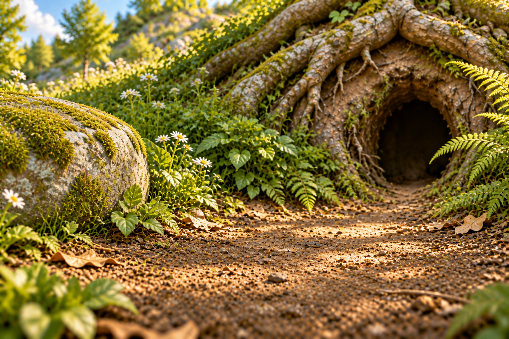
What I See
The left stone is close enough to frame a low portrait, with clear soil and the entrance behind to the right. No fauna visible. The camera change is moderate, not a tight photographic portrait by itself; the future elder must occupy the near ground without being enlarged relative to the doorway. Bright background soil remains detailed.
Markdown record · Full-resolution image
{kind=link}
Exact Prompt
Bring the camera close to the LEFT mossy stone beside the burrow in the reference. Lens height 12 cm, roughly 35 cm in front of the place where a small hedgehog could rest. Use a 65mm portrait field of view in a landscape frame, looking slightly diagonally across the burrow face. The moss-edged stone occupies the near left edge; textured open earth spans the lower middle, and the curved oak root and part of the entrance sit behind at upper right. The background is gently softened but still legible. Leave the left-middle foreground empty for a low resting animal about 30 cm long. Keep the scene naturally small, with a few tiny leaves at the ground's edge. Same morning light and colors, calm shaded fur-lighting space rather than a sun glare. Landscape-only environment plate: plants, soil, stone and sky, with no animals, birds, insects or characters. Warm dimensional children's-book woodland, soft natural highlights and detailed green shadows. Single landscape 1536x1024, no text or panels.
References
- shot-03.png: Location and framing reference; inspect before generation.
Generation 4 / Reading position 9
A Quiet Circle
The two hedgehogs sit in silence before the elder asks where the quill's magic comes from.
Camera. Lift the camera 1.8 metres above the clearing and look down at roughly 75 degrees.
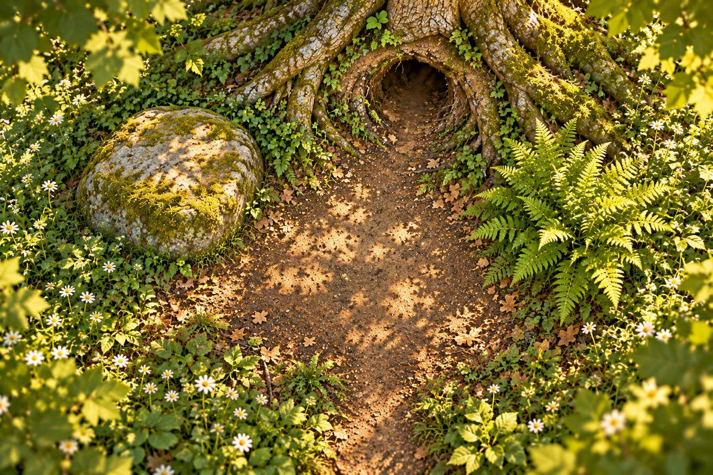
What I See
The steep overhead view reveals the stone top, root layout and small clearing, with stone left and fern right intact. The oval opening is still recognizable though its contour has been redrawn. Ground space is suitable for two separate small bodies, and the leaf shadows add a quiet visual circle. No fauna visible. This is a plausible overhead illustration, not a measured reconstruction.
Markdown record · Full-resolution image
{kind=link}
Exact Prompt
Lift the camera to 1.8 metres above the SAME clearing in the reference and look steeply DOWN at about 75 degrees with a 35mm view. Reconstruct the small meeting ground from above: oak trunk and burrow roots along the upper edge, the flat mossy stone to the LEFT of the doorway, the fern clump to its RIGHT, and the narrow arriving path opening at bottom centre. Let leaf shadows make a loose circular pattern around the empty central soil. Keep space for two small hedgehogs to sit 40 cm apart, but the ground is entirely empty. Show the location as intimate and sheltered, not a huge plaza. This is a physical overhead viewpoint with root tops and stone top now visible. Landscape-only environment plate: plants, soil, stone and sky, with no animals, birds, insects or characters. Warm dimensional children's-book woodland, soft natural highlights and detailed green shadows. Single landscape 1536x1024, no text or panels.
References
- shot-03.png: Location and framing reference; inspect before generation.
Generation 5 / Reading position 10
The Visitor's Eye Line
PinPin admits that the quill's origin is a mystery, then asks how to learn its history.
Camera. Move close to the visitor's position from the elder's side, 12 cm high, with the meadow behind.
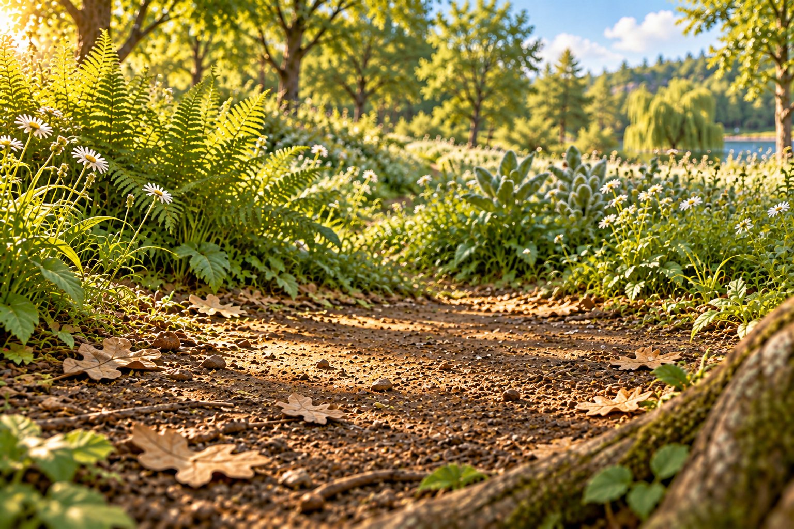
What I See
The reverse portrait plate preserves the left fern, right root and distant lake, with a clear low patch for PinPin. No fauna visible. The field of view remains wider than a literal 65mm portrait; future character scale must be anchored to the leaves, not enlarged simply to fill the page. Background detail is gently softened rather than erased.
Markdown record · Full-resolution image
{kind=link}
Exact Prompt
In this outward-looking clearing reference, move the camera forward about 60 cm toward the empty place where the visitor would be. Lower it to 12 cm above the ground and use a 65mm portrait field of view in a landscape frame. We look across a little patch of fine soil and fallen oak leaves toward the silver-green meadow; the plants beyond become softly detailed background, with only a tiny blue-green glimmer of lake far to the RIGHT. Keep a small section of the root at the extreme lower right as a continuity cue. The empty centre-right foreground is where a 25 cm hedgehog can rest with its face at lens height. Preserve the morning illumination from the left of this reversed view and gentle shadow detail. Landscape-only environment plate: plants, soil, stone and sky, with no animals, birds, insects or characters. Warm dimensional children's-book woodland, soft natural highlights and detailed green shadows. Single landscape 1536x1024, no text or panels.
References
- shot-04.png: Location and framing reference; inspect before generation.
{kind=link}
Generation 6 / Reading position 13
The Hill That Waits
The elder promises a lesson on the summit tomorrow at dawn; the summit stays unoccupied today.
Camera. From halfway up the path, look 35 degrees upward toward the forked oak and grassy crown.
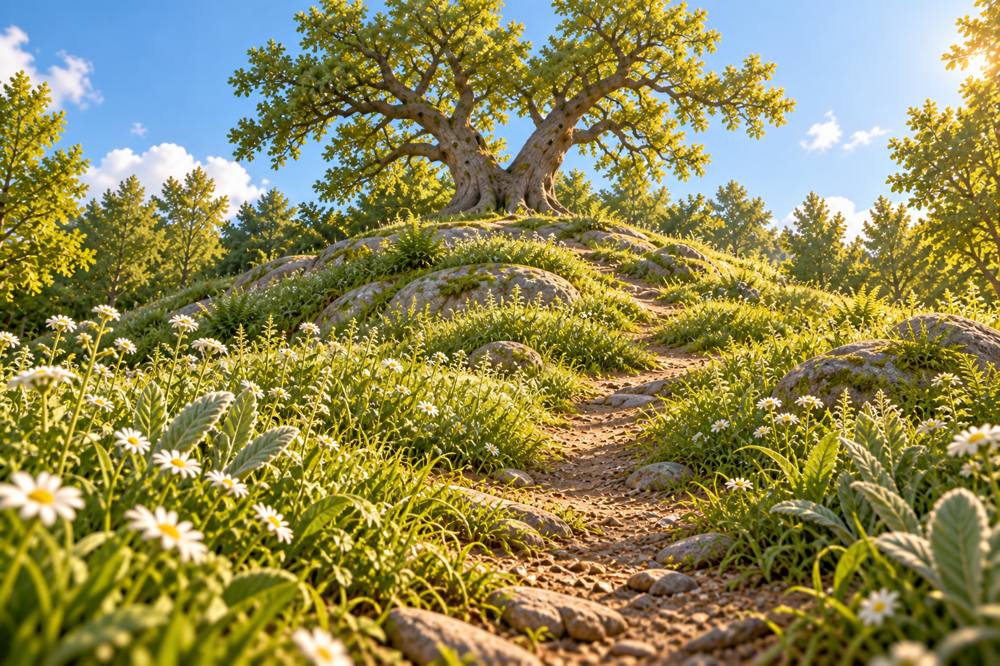
What I See
The camera now faces uphill, with a clear narrow route to the unoccupied forked oak and no burrow falsely placed on the summit. The afternoon sky and green slope keep tomorrow's lesson in the future. No fauna visible. The oak branching and stone arrangement vary from the original wide reference, but the destination remains recognizable. One earlier request failed before producing any image; this is the first image output for this plate.
Markdown record · Full-resolution image
{kind=link}
Exact Prompt
Walk the camera to the beginning of the small uphill trail just beyond the burrow in the reference, then aim about 35 degrees UP toward the SAME ancient forked oak crowning Burrow Hill. Lens height 25 cm, 28mm wide view. The near grassy slope, a few pale stones and silver-green leaves lead upward; the old oak's forked trunk and spreading crown fill the upper middle against clear pale blue sky. The root burrow at the foot of the hill is now below and behind the camera. Afternoon sunlight is gentle and still high enough for green grass to retain its color. The summit is empty and welcoming, a place for tomorrow's promised meeting, not dawn and not an occupied lesson. Landscape-only environment plate: plants, soil, stone and sky, with no animals, birds, insects or characters. Warm dimensional children's-book woodland, soft natural highlights and detailed green shadows. Single landscape 1536x1024, no text or panels.
References
- shot-02.png: Location and framing reference; inspect before generation.
Generation 7 / Reading position 15
An Empty Little Window
A silent pause in the meadow prepares the playful final reveal.
Camera. Return to the same low leaf arch at sunset, camera stationary at 8 cm.
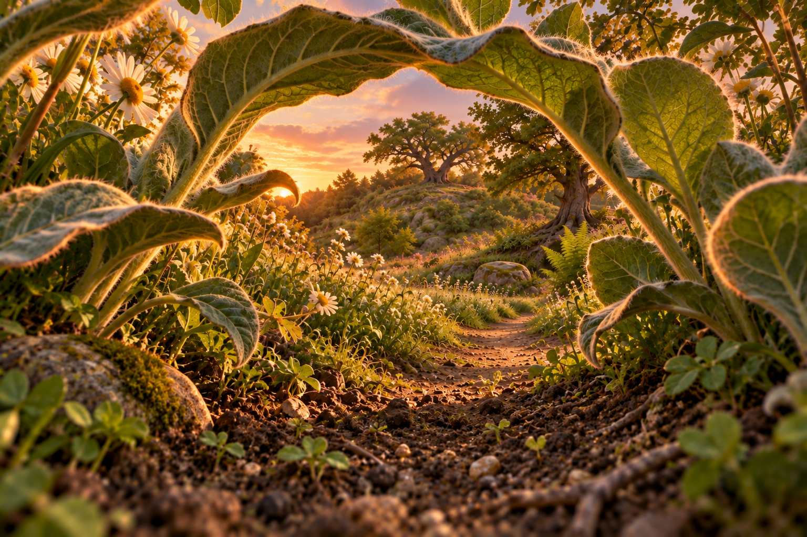
What I See
The morning leaf opening is preserved closely, now with a warm sunset rim, rose sky and cool shaded soil. No fauna visible. This gives a stable empty frame for the final page-turn reveal. The sun is visible through the left side, with bright leaf hairs but retained vein detail. The setting is stylized and warm, not neutral photographic color.
Markdown record · Full-resolution image
{kind=link}
Exact Prompt
Keep this reference's exact low camera position, framing and natural arch of silver-backed leaves. It is now SUNSET after a day at the elder's home. Change only the light and tiny natural movements: a few leaf tips shift gently, shadows lengthen, the leaf edges catch soft amber from the LEFT and the hollow stays cool green. Through the empty central opening, the path recedes into a gentle rose-and-green evening meadow. Keep leaf veins and soft hairs legible without glaring whites. This is a quiet empty little window 25 cm across, ready for a surprise on the next page. The camera stays still and nothing fills the opening yet. Landscape-only environment plate: plants, soil, stone and sky, with no animals, birds, insects or characters. Warm dimensional children's-book woodland, soft natural highlights and detailed green shadows. Single landscape 1536x1024, no text or panels.
References
- shot-06.png: Location and framing reference; inspect before generation.
Generation 8 / Reading position 4
The Greeting
The elder welcomes PinPin without turning to look at him.
Camera. Existing low three-quarter clearing view; separate the two silhouettes clearly.
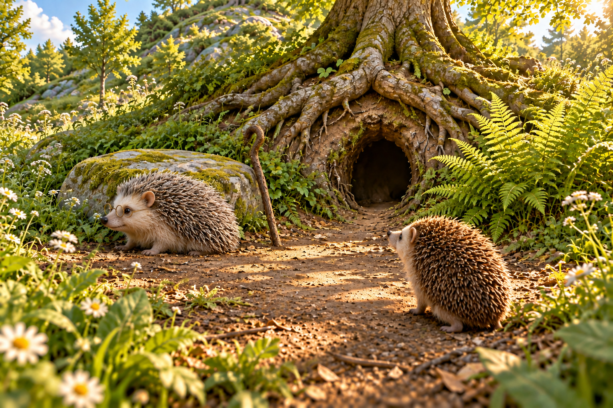
What I See
The elder has silver-grey quills, a soft ivory face and small round brass spectacles. His two front paws are grounded under the chest, with a rear paw visible and the far hindlimb occluded; no extra chest limb is visible. PinPin looks toward him from lower right, with a visible near foreleg and hindfoot; far limbs are occluded. PinPin's rear silhouette is more upright than requested, so subsequent PinPin references also use his published Chapter 1 low-body design. The elder faces outward rather than turning, matching the greeting. The staff is separate from both bodies. Both are somewhat larger than the exact requested percentages, but the doorway still establishes them as small animals.
Markdown record · Full-resolution image
{kind=link}
Exact Prompt
Image 1 is the clean clearing: keep its camera, roots, stone, fern and light. Image 2 supplies ONLY the young hedgehog's design, not the rabbit or the lake. Place two small natural hedgehogs on the soil in this same scene. At the LEFT stone, Master Shipostav rests low on all four paws, facing LEFT toward the meadow, his face in gentle profile without turning toward the arriving visitor. He is a slightly larger old hedgehog, about 30 cm long, with silver-grey quills, warm ivory face, small rounded ears, calm dark eyes and delicate round brass spectacles. A slender staff made of twisted bramble leans against the root beside him, separate from his paws. On the LOWER RIGHT, Mr. PinPin approaches the elder, showing his brown spiny back in three-quarter rear view and turning his small cream muzzle toward the elder. PinPin is 25 cm long, about 16 percent of frame width, with short grounded legs. Elder about 19 percent of frame width. Leave a clear stretch of earth between them. The 45 cm-high burrow remains larger than either animal. Render the characters with finished soft expressive faces, natural compact hedgehog bodies, two short forelegs beneath the shoulders and two short hindlegs beneath the rear. Paws are part of those four legs. Match the ground contact and exposure. No clothes, boots, head ornaments or extra animals. Single landscape 1536x1024, no text or panels.
References
- shot-03.png: Clean environment edit target; preserve camera and exposure.
- 03.png: Young PinPin design only, not the background or rabbit.
{kind=link}
Generation 9 / Reading position 1
Away from the Lake
The next morning, PinPin leaves the lake to seek the elder.
Camera. Unchanged low path view with the destination ahead.
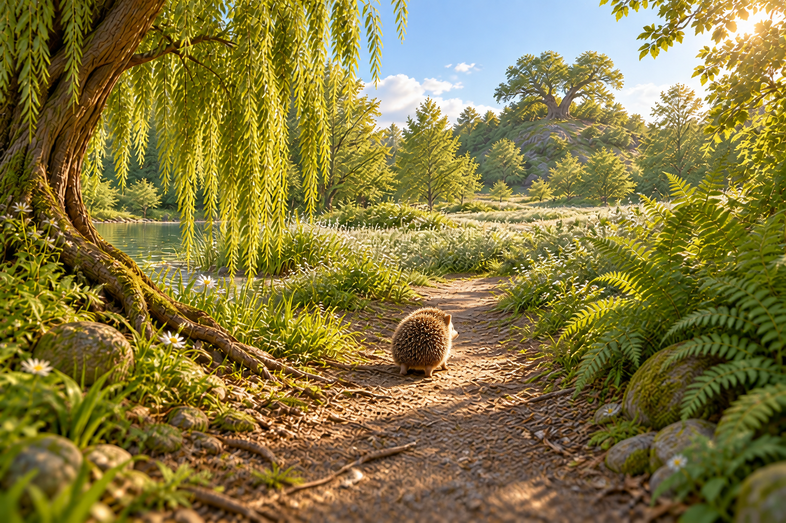
What I See
PinPin is small on the trail and faces away toward the destination, with a rounded back and low walking posture. Two rear feet and a small forward-side paw are visible; the remaining forelimb is naturally hidden. I see no duplicate limb or extra character. The lake-left/path-ahead relationship remains intact. Fine foliage has been re-rendered with a slightly more brushlike texture, so this is not pixel-identical background preservation.
Markdown record · Full-resolution image
{kind=link}
Exact Prompt
Keep image 1's landscape and camera unchanged. Use only young PinPin from image 2 as character reference. Add PinPin alone on the middle of the trail, walking AWAY FROM US toward the meadow and distant oak-crowned hill. We see his rounded brown spiny back, two small rear feet and a little of the far side of his muzzle pointing forward along the path. His belly stays low as he walks. His body is about 25 cm long, roughly 8 percent of the image width, naturally small beside the roots and leaves. Keep the lake on the left unobstructed. Image 3 is the PRIMARY guide for young PinPin's low body, cream face and brown quills; use it for his anatomy and identity, while image 2 keeps the elder consistent. Render the characters with finished soft expressive faces, natural compact hedgehog bodies, two short forelegs beneath the shoulders and two short hindlegs beneath the rear. Paws are part of those four legs. Match the ground contact and exposure. No clothes, boots, head ornaments or extra animals. Single landscape 1536x1024, no text or panels.
References
- shot-01.png: Clean environment edit target; preserve camera and exposure.
- scene-04.png: Shared cast identity only, not the scene composition.
- 03.png: Primary young PinPin body and face identity: low, compact natural hedgehog. Do not copy the rabbit or lake.
{kind=link}
Generation 10 / Reading position 2
A World Beneath Leaves
PinPin's curiosity carries him through the silver-leaf meadow.
Camera. Low leaf-arch camera, looking through a natural opening at hedgehog height.
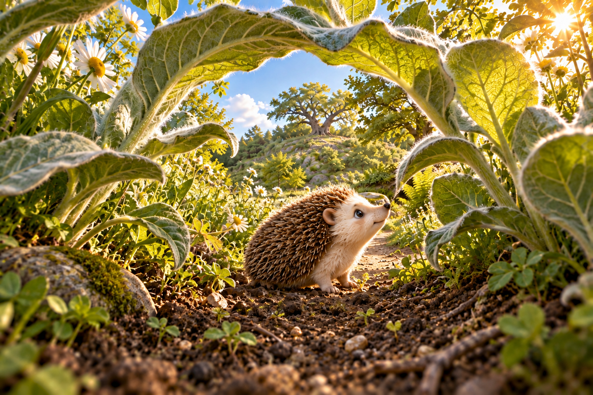
What I See
PinPin's small nose reaches the curled leaf tip, giving the approach a curious action rather than a static walk. His face is soft and alert. Two forepaws are planted beneath the chest and a near hindfoot is visible at the rear; the far hindlimb is hidden by his low body. No raised extra chest paw is visible. The leaf arch and distant hill remain intact. The arch is generous around him, which keeps the environment dominant even in this closer shot.
Markdown record · Full-resolution image
{kind=link}
Exact Prompt
Keep image 1's low leaf-arch viewpoint, plants and morning light. Image 2 supplies the young PinPin's identity only. Add PinPin alone, halfway THROUGH the natural leaf opening, moving toward the upper right along the trail. We see his low compact body in side three-quarter view, about 25 cm long and naturally fitted beneath the leaves. He pauses with his small nose tilted up toward the edge of a silver leaf, bright-eyed and curious. His two near-side paws stand on the soil, with the far-side pair naturally occluded by his body. Keep the cream face soft and the brown quills finely detailed; an ordinary leaf is an interesting discovery at this scale. Image 3 is the PRIMARY guide for young PinPin's low body, cream face and brown quills; use it for his anatomy and identity, while image 2 keeps the elder consistent. Render the characters with finished soft expressive faces, natural compact hedgehog bodies, two short forelegs beneath the shoulders and two short hindlegs beneath the rear. Paws are part of those four legs. Match the ground contact and exposure. No clothes, boots, head ornaments or extra animals. Single landscape 1536x1024, no text or panels.
References
- shot-06.png: Clean environment edit target; preserve camera and exposure.
- scene-04.png: Shared cast identity only, not the scene composition.
- 03.png: Primary young PinPin body and face identity: low, compact natural hedgehog. Do not copy the rabbit or lake.
Generation 11 / Reading position 3
At the Foot of Burrow Hill
PinPin spots the elder sitting outside with his bramble staff.
Camera. Keep the meadow approach wide so the two figures establish scale.
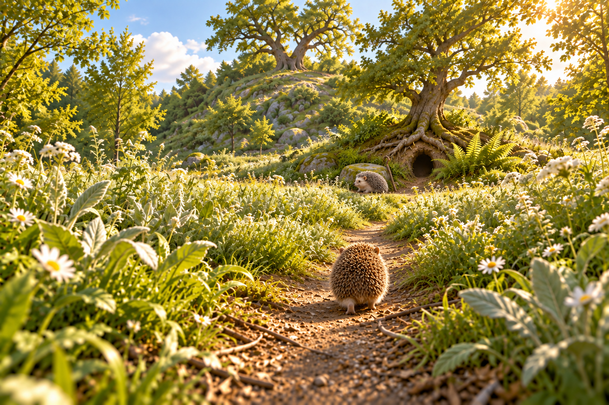
What I See
The approach direction and relative distance read clearly: PinPin's back is near us on the trail and the elder is much smaller beside the entrance. The staff remains separate. PinPin's visible feet are rear feet; his forelimbs are hidden by the rear view, so they cannot be counted reliably. The upright egg-shaped back is still a stylistic exaggeration, not a verified additional-limb problem. The elder's tiny spectacles and paws are difficult to inspect at this scale; the closer greeting supplies the readable identity.
Markdown record · Full-resolution image
{kind=link}
Exact Prompt
Keep image 1's broad meadow approach, hill, two oaks and root entrance. Image 2 is the shared character reference: young brown PinPin and the silver-grey elder with round brass spectacles. Add both at their correct distances. PinPin walks away up the centre trail in the lower middle, brown spiny back toward us, body about 8 percent of frame width. Farther away beside the LEFT stone at the small burrow entrance, the grey elder rests low looking outward, his body only about 4 percent of frame width at that distance. His twisted bramble staff leans against the root beside him, not held. Let sunlight edge his grey quills. The meadow and hill remain the main subject. Image 3 is the PRIMARY guide for young PinPin's low body, cream face and brown quills; use it for his anatomy and identity, while image 2 keeps the elder consistent. Render the characters with finished soft expressive faces, natural compact hedgehog bodies, two short forelegs beneath the shoulders and two short hindlegs beneath the rear. Paws are part of those four legs. Match the ground contact and exposure. No clothes, boots, head ornaments or extra animals. Single landscape 1536x1024, no text or panels.
References
- shot-02.png: Clean environment edit target; preserve camera and exposure.
- scene-04.png: Shared cast identity only, not the scene composition.
- 03.png: Primary young PinPin body and face identity: low, compact natural hedgehog. Do not copy the rabbit or lake.
Generation 12 / Reading position 5
How Did You Know?
PinPin wonders how the elder knew he would come.
Camera. Reverse angle from the elder's side, looking out across the clearing.
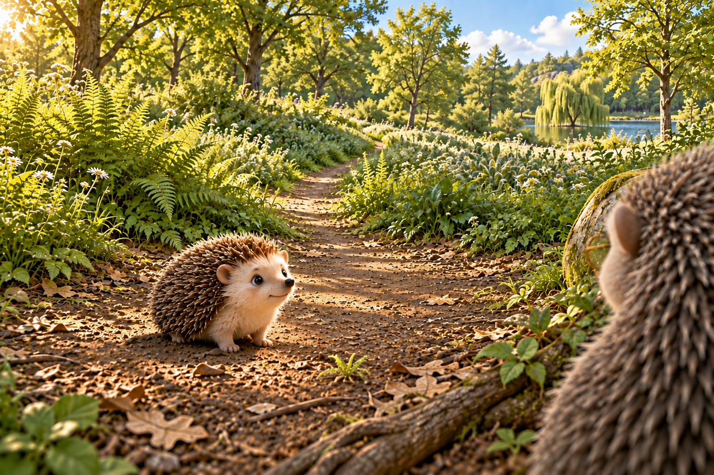
What I See
The reverse conversation is clear: PinPin faces the elder's close grey shoulder at right, with meadow and lake behind. PinPin's eyes and muzzle are expressive and consistent with Chapter 1. Two forepaws attach under the shoulders; one rear paw peeks from the back and the far hindlimb is hidden. No extra chest limb visible. The elder is intentionally cropped at the right edge, so his full anatomy cannot be judged here. His spectacle side and grey quills retain identity.
Markdown record · Full-resolution image
{kind=link}
Exact Prompt
Keep image 1's outward-looking clearing camera and background. Image 2 is character identity only: grey bespectacled elder, brown young PinPin. Place PinPin low on the centre-left open earth, facing toward the near RIGHT where the elder sits. His inquisitive cream face is in three-quarter view, eyes lifted toward the elder, body about 22 percent of frame width. At the extreme near RIGHT beside the mossy stone, include the elder's grey quilled shoulder/back and a small side glimpse of his spectacles as foreground framing; his body naturally continues beyond the right edge. PinPin's body stays low with his front pair of paws on the soil beneath his chest and his short hind pair beneath his rounded rear. Keep the distant lake visible. Image 3 is the PRIMARY guide for young PinPin's low body, cream face and brown quills; use it for his anatomy and identity, while image 2 keeps the elder consistent. Render the characters with finished soft expressive faces, natural compact hedgehog bodies, two short forelegs beneath the shoulders and two short hindlegs beneath the rear. Paws are part of those four legs. Match the ground contact and exposure. No clothes, boots, head ornaments or extra animals. Single landscape 1536x1024, no text or panels.
References
- shot-04.png: Clean environment edit target; preserve camera and exposure.
- scene-04.png: Shared cast identity only, not the scene composition.
- 03.png: Primary young PinPin body and face identity: low, compact natural hedgehog. Do not copy the rabbit or lake.
Generation 13 / Reading position 7
Yesterday's Magic
PinPin tells the elder about restoring the lake and wanting to learn.
Camera. Return to the original clearing two-shot, now with both faces oriented toward each other.
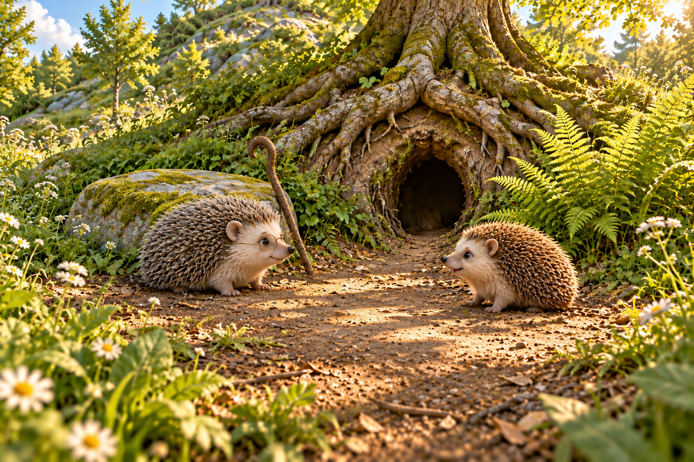
What I See
Both faces now point toward one another, and PinPin's slightly open mouth fits his account of yesterday's magic. The elder remains distinct through grey quills and spectacles; the staff stays behind him. Each visible front pair is grounded directly beneath the chest, with hind paws partly hidden by the low rounded bodies. No duplicated chest limb is visible. The two silhouettes and their shadow contacts are separate; the doorway and fern still identify the clearing.
Markdown record · Full-resolution image
{kind=link}
Exact Prompt
Keep image 1's clean clearing, camera and morning light. Match both characters to image 2. The silver-grey elder rests low beside the LEFT mossy stone, now turning his face RIGHT toward young PinPin. His round brass spectacles and gentle expression are clear; the bramble staff rests against the root behind him. PinPin is on the RIGHT, facing left toward the elder with an earnest, slightly open-mouthed expression as he tells his story. Both small bodies rest naturally on four short paws and remain separate, about 20 percent and 17 percent of frame width respectively. Keep the entrance and open ground legible. Their interest is carried by eyes and head angle, not raised arms. Image 3 is the PRIMARY guide for young PinPin's low body, cream face and brown quills; use it for his anatomy and identity, while image 2 keeps the elder consistent. Render the characters with finished soft expressive faces, natural compact hedgehog bodies, two short forelegs beneath the shoulders and two short hindlegs beneath the rear. Paws are part of those four legs. Match the ground contact and exposure. No clothes, boots, head ornaments or extra animals. Single landscape 1536x1024, no text or panels.
References
- shot-03.png: Clean environment edit target; preserve camera and exposure.
- scene-04.png: Shared cast identity only, not the scene composition.
- 03.png: Primary young PinPin body and face identity: low, compact natural hedgehog. Do not copy the rabbit or lake.
Generation 14 / Reading position 8
The Responsibility of Magic
The elder explains that mastery includes understanding the source of one's power and its responsibility.
Camera. Close low portrait beside the stone, with the root entrance behind.
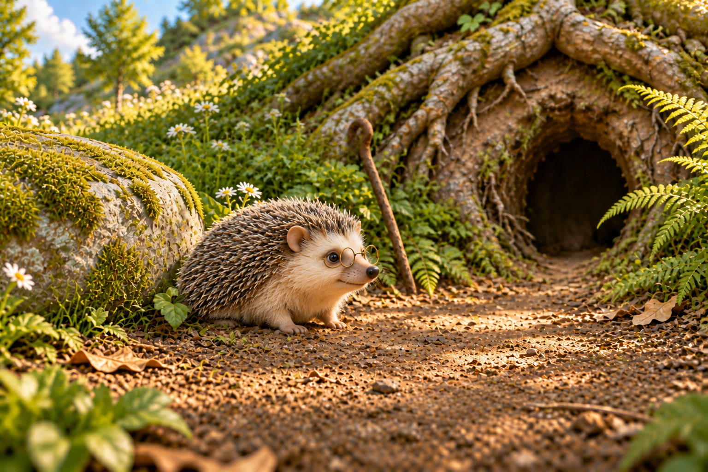
What I See
The elder's face is soft and attentive, with readable eyes and spectacles, a small nose and silver-edged quills. His two forepaws are grounded under the chest; hindfeet are largely under the low rear body, with no extra chest appendage visible. The staff is separate behind him. This is a medium-close rather than tightly cropped portrait: the doorway still provides scale and place. The spectacle lenses sit forward on the muzzle, a stylized fit rather than optically precise eyewear.
Markdown record · Full-resolution image
{kind=link}
Exact Prompt
Keep image 1's close low camera and mossy-stone/root background. Image 2 establishes the silver-grey elder's identity. Add ONLY Master Shipostav resting low on the empty earth at left-middle, his warm ivory face and small round brass spectacles in a gentle three-quarter view toward the RIGHT, looking at PinPin off-camera. His whole visible body is that of a natural old hedgehog with a compact silver-grey quilled back, small ears and short legs; the portrait emphasizes his calm dark eyes and soft mouth. Two forepaws rest directly below his shoulders, while his rear is naturally tucked behind his body. Place the bramble staff against the blurred root far behind him, clearly separate from his body. His expression is kind and thoughtful, not stern or theatrically magical. Render the characters with finished soft expressive faces, natural compact hedgehog bodies, two short forelegs beneath the shoulders and two short hindlegs beneath the rear. Paws are part of those four legs. Match the ground contact and exposure. No clothes, boots, head ornaments or extra animals. Single landscape 1536x1024, no text or panels.
References
- shot-08.png: Clean environment edit target; preserve camera and exposure.
- scene-04.png: Shared cast identity only, not the scene composition.
Generation 15 / Reading position 9
The Question in the Quiet
The two sit listening; the elder asks where PinPin's golden quill gets its magic.
Camera. Near-overhead clearing, the dialogue seen as a small sheltered encounter.
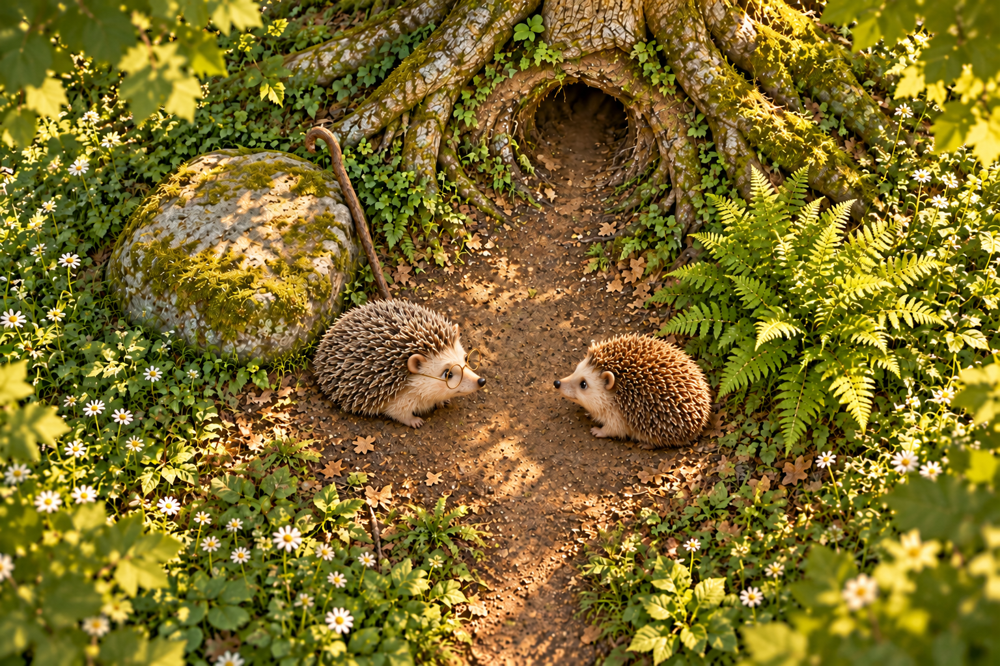
What I See
Both hedgehogs sit separately within the overhead clearing, grey elder left and brown PinPin right, with their noses facing each other. The staff remains by the stone and does not intersect their bodies. Quill backs and a few naturally occluded paw tips are visible; full limb counts cannot be certified from this view. The characters are drawn at a somewhat shallower angle than the steep ground view, but the shared encounter and contact shadows remain readable.
Markdown record · Full-resolution image
{kind=link}
Exact Prompt
Keep image 1's overhead camera, clearing geometry and leaf shadows. Image 2 establishes both hedgehogs. Place the silver-grey elder on the LEFT of the open soil by his mossy stone and brown PinPin on the RIGHT, about 40 cm apart. Both rest low, their noses pointing toward one another. From this steep angle their rounded quilled backs are the main shapes, with small cream muzzles and naturally partly hidden short paws. Each body spans only about one sixth of frame width. The elder's bramble staff lies against the root near the stone, away from the animals. This is a quiet shared pause within a much larger pattern of roots, leaves and light. Image 3 is the PRIMARY guide for young PinPin's low body, cream face and brown quills; use it for his anatomy and identity, while image 2 keeps the elder consistent. Render the characters with finished soft expressive faces, natural compact hedgehog bodies, two short forelegs beneath the shoulders and two short hindlegs beneath the rear. Paws are part of those four legs. Match the ground contact and exposure. No clothes, boots, head ornaments or extra animals. Single landscape 1536x1024, no text or panels.
References
- shot-09.png: Clean environment edit target; preserve camera and exposure.
- scene-04.png: Shared cast identity only, not the scene composition.
- 03.png: Primary young PinPin body and face identity: low, compact natural hedgehog. Do not copy the rabbit or lake.
Generation 16 / Reading position 10
A Mystery Since Birth
PinPin admits that his quill has been with him since birth, but its origin is a mystery.
Camera. Close low reverse portrait with soft meadow behind.
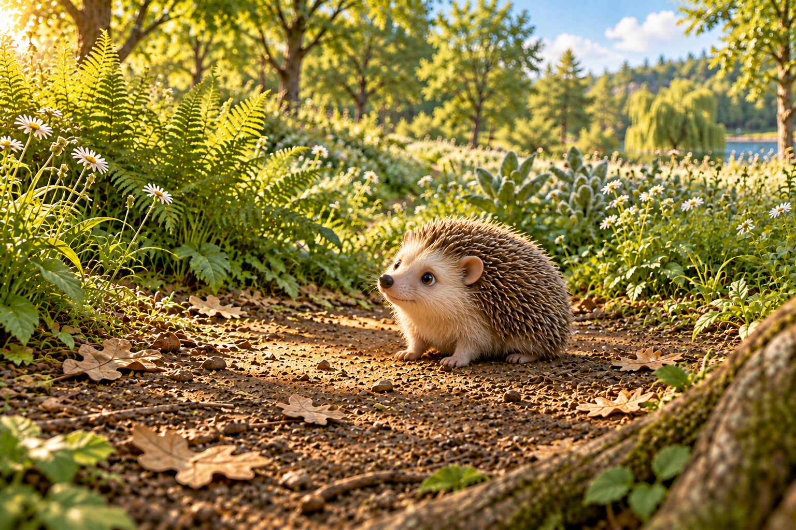
What I See
REJECTED for eyeline continuity after independent review. The outward-looking background matches scene 5, where the elder is established at camera-right, but PinPin faces left. No extra foreleg attachment was confirmed. Replace with a fresh right-facing portrait from the clean plate; do not edit this output again. Retained for the audit, not for the final reader.
Markdown record · Full-resolution image
{kind=link}
Exact Prompt
Keep image 1's low close portrait viewpoint and meadow background. Use only young brown PinPin from image 2 as character reference. Place PinPin alone in the centre-right foreground, resting naturally low on the soil, facing LEFT toward the elder off-camera. His small cream muzzle tilts a little sideways as if admitting he does not know; warm curious eyes, soft cheeks, small dark nose only at the tip of the muzzle. His compact brown-quilled back curves behind his head, his front paws lie on the ground directly under his shoulders and his hindfeet remain under the rear. Frame his complete head and most of his small low body, with generous meadow around him. The magic is in the story, not a giant golden head ornament. Image 3 is the PRIMARY guide for young PinPin's low body, cream face and brown quills; use it for his anatomy and identity, while image 2 keeps the elder consistent. Render the characters with finished soft expressive faces, natural compact hedgehog bodies, two short forelegs beneath the shoulders and two short hindlegs beneath the rear. Paws are part of those four legs. Match the ground contact and exposure. No clothes, boots, head ornaments or extra animals. Single landscape 1536x1024, no text or panels.
References
- shot-10.png: Clean environment edit target; preserve camera and exposure.
- scene-04.png: Shared cast identity only, not the scene composition.
- 03.png: Primary young PinPin body and face identity: low, compact natural hedgehog. Do not copy the rabbit or lake.
Generation 17 / Reading position 11
A Story in Every Quill
The elder leans closer and explains the ancient magic of their ancestors.
Camera. Same elder-side portrait, with a small forward lean that changes the conversation's intimacy.
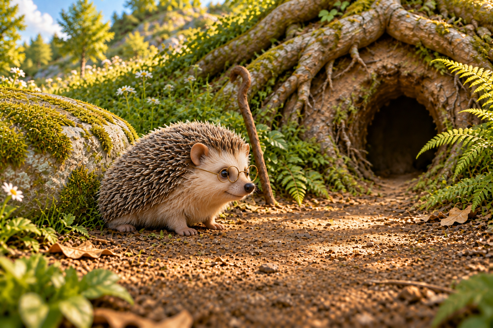
What I See
The elder leans his face toward the listener and has a more intimate, attentive expression than scene 8. Two front paws remain under his chest and one near hindfoot is visible at the rear, with the far side hidden; no extra chest limb visible. Spectacles and grey quills preserve identity. His body occupies somewhat more of the frame than the preceding elder portrait despite the same plate, so this is not an exact pose-only transformation. The root setting and separate staff remain consistent.
Markdown record · Full-resolution image
{kind=link}
Exact Prompt
Keep image 1's clean close root-and-stone background and low camera. Use the silver-grey elder in image 2 as identity reference. Master Shipostav is alone in the left-middle foreground, resting low with his body on four short paws. Lean his head gently FORWARD toward the RIGHT, as if sharing a treasured story with PinPin just outside the frame. His round brass spectacles sit naturally on his little muzzle; show warm, attentive dark eyes through the lenses and finely textured silver-grey quills. The near front paw stays on the soil under his shoulder rather than becoming a raised gesture. The twisted bramble staff remains against the background root. The expression is affectionate and quietly animated. Render the characters with finished soft expressive faces, natural compact hedgehog bodies, two short forelegs beneath the shoulders and two short hindlegs beneath the rear. Paws are part of those four legs. Match the ground contact and exposure. No clothes, boots, head ornaments or extra animals. Single landscape 1536x1024, no text or panels.
References
- shot-08.png: Clean environment edit target; preserve camera and exposure.
- scene-04.png: Shared cast identity only, not the scene composition.
Generation 18 / Reading position 12
How Can I Discover It?
PinPin's eyes widen with curiosity as he asks how to learn the quill's history.
Camera. Same low visitor portrait, eyes and ears more alert.
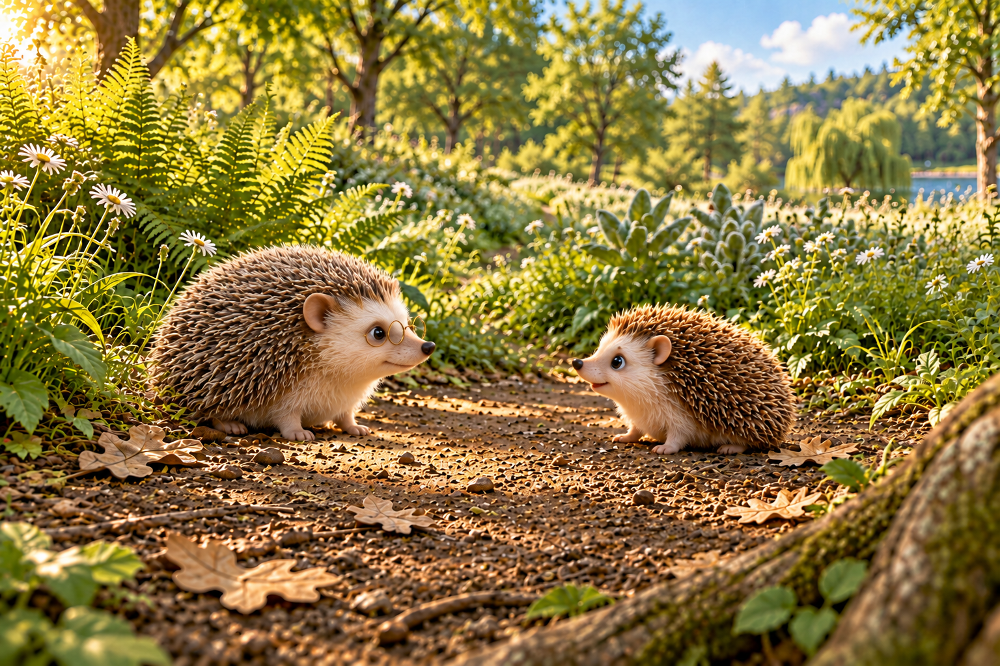
What I See
REJECTED for composition: the model added the elder even though this was specified as a solo PinPin portrait. The two animals appear grounded without an obvious extra chest limb, but the shared cast reference leaked an unwanted character into the scene. A replacement will be generated from the clean plate with only PinPin's Chapter 1 identity reference, not edited from this result. This file is retained as an auditable rejected attempt and is not the reader asset.
Markdown record · Full-resolution image
{kind=link}
Exact Prompt
Keep image 1's low camera, fine soil and soft silver-leaf background. Young PinPin from image 2 is the only character. Place him alone at centre-right, facing LEFT toward the elder, with his little nose leaning forward, ears perked and eyes slightly WIDER with eager curiosity. His expression changes from uncertainty to an excited question, but stays like a gentle natural hedgehog, with cream cheeks, dark eyes, small black nose at the snout tip and brown quills. Keep his compact body low and its four short paws physically supporting it, front paws beneath shoulders and hindfeet beneath rump. No raised hand gestures. Let the silver meadow light reflect softly in his eyes. Image 3 is the PRIMARY guide for young PinPin's low body, cream face and brown quills; use it for his anatomy and identity, while image 2 keeps the elder consistent. Render the characters with finished soft expressive faces, natural compact hedgehog bodies, two short forelegs beneath the shoulders and two short hindlegs beneath the rear. Paws are part of those four legs. Match the ground contact and exposure. No clothes, boots, head ornaments or extra animals. Single landscape 1536x1024, no text or panels.
References
- shot-10.png: Clean environment edit target; preserve camera and exposure.
- scene-04.png: Shared cast identity only, not the scene composition.
- 03.png: Primary young PinPin body and face identity: low, compact natural hedgehog. Do not copy the rabbit or lake.
Generation 19 / Reading position 12
How Can I Discover It? (Solo Replacement)
PinPin's eyes widen with curiosity as he asks how to learn the quill's history.
Camera. Same low visitor portrait, eyes and ears more alert.
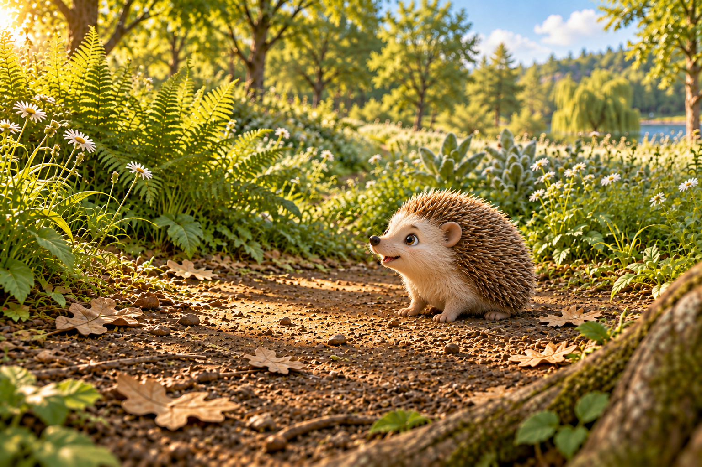
What I See
REJECTED for eyeline continuity after independent review. The outward-looking background matches scene 5, where the elder is established at camera-right, but PinPin faces left. No extra foreleg attachment was confirmed. Replace with a fresh right-facing portrait from the clean plate; do not edit this output again. Retained for the audit, not for the final reader.
Markdown record · Full-resolution image
{kind=link}
Exact Prompt
Keep image 1's low camera, fine soil and soft silver-leaf meadow background unchanged. The young brown hedgehog in image 2 is the character identity reference. Add ONE character: young Mr. PinPin alone, resting low at centre-right and facing LEFT toward his teacher outside the frame. His little nose leans forward, rounded ears are perked, and his warm dark eyes are slightly wider with eager curiosity. A tiny open mouth suggests his excited question. Soft cream cheeks, small black nose at the snout tip, finely textured brown quills. His compact 25 cm hedgehog body stays low, supported by two short front legs beneath the shoulders and two short hindlegs beneath the rump. Empty paws resting on the soil, no human gestures. The left side of the clearing stays empty. Keep the natural scale against the existing oak leaves and the gentle morning exposure. Single landscape 1536x1024, no lettering, no head ornament, no other characters.
References
- shot-10.png: Clean environment edit target; preserve camera and exposure.
- 03.png: Only young PinPin's body and facial identity; exclude this reference's rabbit and lake.
Generation 20 / Reading position 14
Tomorrow on the Hill
The sun sets as PinPin leaves, excited and a little nervous about the next lesson.
Camera. Wide sunset view of the familiar hill and trail.
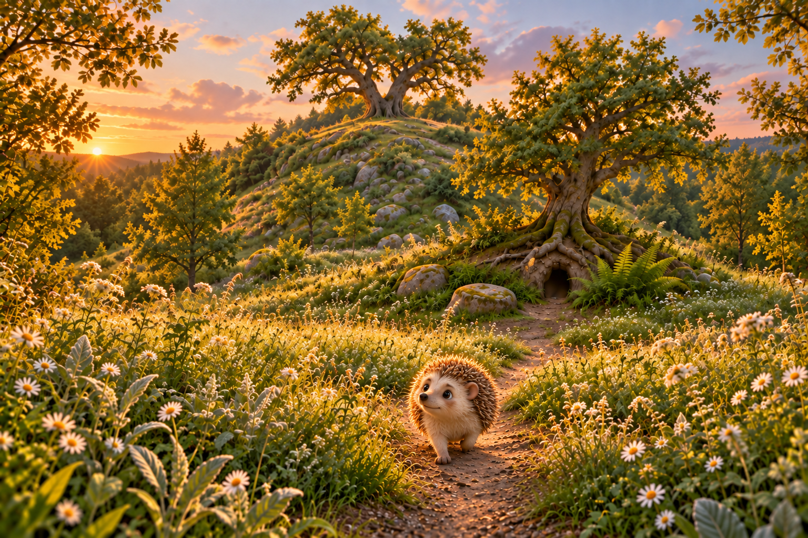
What I See
PinPin walks toward the foreground along the returning path, naturally small against the hill and flowers. The two front legs are in a walking stride with the hindlimbs mostly hidden behind; no duplicated front attachment is visible. His face turns slightly left rather than fully back toward the hill as requested, so the action is departure with a thoughtful glance, not a literal over-shoulder look. The sunset landscape and distant empty summit remain intact.
Markdown record · Full-resolution image
{kind=link}
Exact Prompt
Keep image 1's sunset hill, forked summit oak, root burrow and winding path unchanged. Use young PinPin from image 2 as identity reference. Add PinPin alone on the path in the lower middle, walking DOWN the trail toward the foreground, away from the elder's home. His compact body follows the trail, while his head turns back a little toward the oak-crowned hill behind him, caught between excitement and a small hesitation. He remains a little 25 cm hedgehog, about 10 percent of frame width, with four short naturally walking legs. Warm sunset edges on brown quills, cool cream-fur shadows. Keep the broad quiet sky and destination visible. Render the characters with finished soft expressive faces, natural compact hedgehog bodies, two short forelegs beneath the shoulders and two short hindlegs beneath the rear. Paws are part of those four legs. Match the ground contact and exposure. No clothes, boots, head ornaments or extra animals. Single landscape 1536x1024, no text or panels.
References
- shot-05.png: Clean environment edit target; preserve camera and exposure.
- 03.png: Only young PinPin's facial and low-body identity, not the rabbit or lake.
{kind=link}
Generation 21 / Reading position 16
Someone in the Leaves
A silent visual coda: the empty opening from the previous page reveals PinPin's curious face.
Camera. Keep the previous empty leaf-window camera still; the character comes to the camera.
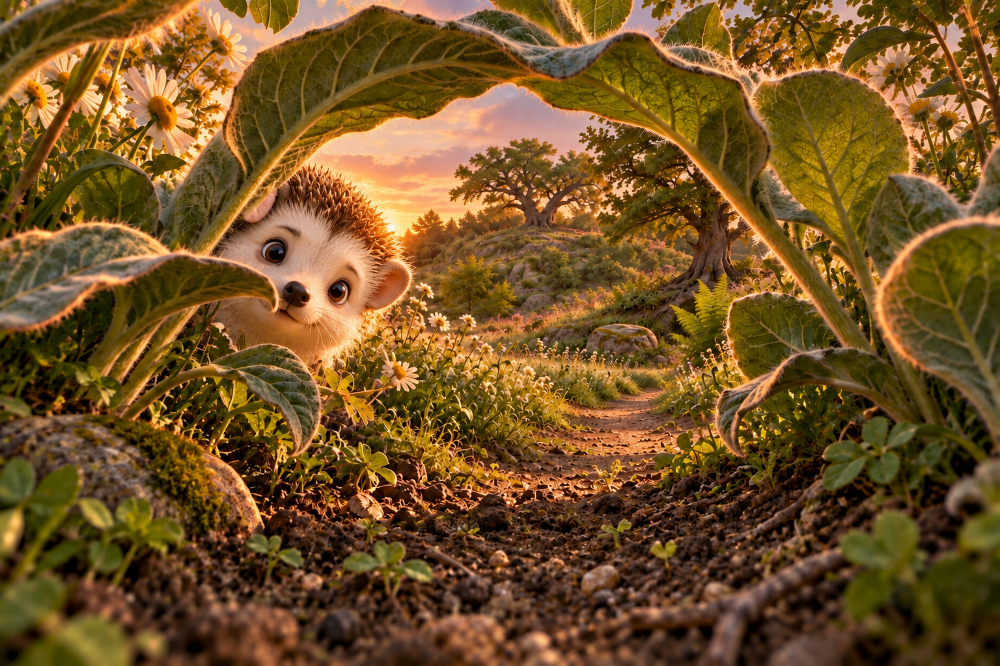
What I See
The final face peeks in from the left edge of the same leaf opening, with one ear brushing the upper leaf, a small nose beside the curled tip, and direct curious eye contact. The body is naturally behind the leaves; no limbs are exposed or invented in the visible portion. The face is soft and expressive, with no head ornament. Most of the empty view stays recognizable, so it works as a reveal after the previous silent page. His position is off-centre rather than filling the middle, a useful playful variation.
Markdown record · Full-resolution image
{kind=link}
Exact Prompt
Keep image 1's EXACT sunset leaf-window camera, composition, leaf arch and exposure. Image 2 gives young PinPin's character identity. Now PinPin himself comes to the empty opening: his small cream face peeks THROUGH the leaves toward our lens, head tipped playfully just a little, one round ear brushing a silver leaf. His small black nose almost touches a curled leaf tip, and his warm dark eyes look straight at us with curiosity. A few brown quills are visible behind his face; the rest of his low quadruped body and its paws remain naturally behind the surrounding leaves. This is a face peeking through a real 25 cm-wide gap, not a face painted on a leaf. Slightly shift the nearby leaf tip as it brushes his ear. Dry soft fur, gentle warm rim light and cool green shadows. The quiet empty opening on the previous page makes this friendly surprise land. Render the characters with finished soft expressive faces, natural compact hedgehog bodies, two short forelegs beneath the shoulders and two short hindlegs beneath the rear. Paws are part of those four legs. Match the ground contact and exposure. No clothes, boots, head ornaments or extra animals. Single landscape 1536x1024, no text or panels.
References
- shot-12.png: Clean environment edit target; preserve camera and exposure.
- 03.png: Only young PinPin's facial and low-body identity, not the rabbit or lake.
Generation 22 / Reading position 10
A Mystery Since Birth (Eyeline Correction)
PinPin admits that his quill has been with him since birth, but its origin is a mystery.
Camera. Low reverse-view portrait with meadow behind; PinPin faces RIGHT toward the elder established at camera-right in scene 5.
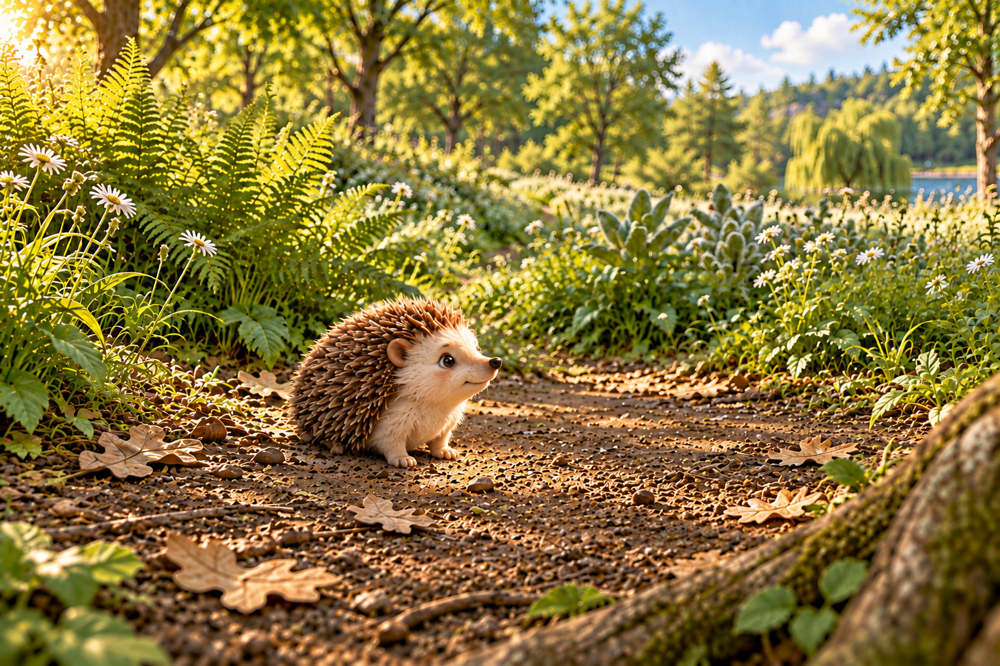
What I See
PinPin now faces camera-right toward the elder's established off-camera position, with open space for that gaze. The left fern, right root and lake maintain the reverse background. Two front paws attach below his shoulders; rear paws are partly hidden under the quills, with no extra chest appendage visible. His mouth is closed and expression quietly uncertain. Only PinPin is present; face and body stay close to the Chapter 1 design.
Markdown record · Full-resolution image
{kind=link}
Exact Prompt
Image 1 is the clean background. Keep its low camera, soil, left fern, silver-green meadow, tiny distant lake on the right and morning light unchanged. Image 2 supplies ONLY the young brown hedgehog's character design. Add Mr. PinPin ALONE, resting low at CENTRE-LEFT of image 1. His whole compact body and his nose face to the RIGHT, toward his teacher just outside the RIGHT edge of the frame. Leave clear open gaze space to his right. His cream muzzle tilts slightly to one side, mouth gently closed and eyes quietly puzzled as he admits that the quill's origin is a mystery. Soft cream cheeks, warm dark eyes, rounded little ears, small black nose at the snout tip and finely textured brown quills. He is a natural 25 cm hedgehog on four short legs: the front pair beneath his shoulders, rear pair beneath his rump, with paws naturally on the soil and far-side limbs partly occluded by his body. No human arm gesture, no head ornament and no other characters. Keep his scale believable against the existing oak leaves. Finished soft dimensional children's-book rendering, single landscape 1536x1024, no lettering or panels.
References
- shot-10.png: Clean reverse-view portrait plate; retain camera, meadow and lake.
- 03.png: Young PinPin's face and low-body identity only; not the rabbit or dry lake.
Generation 23 / Reading position 12
How Can I Discover It? (Eyeline Correction)
PinPin's eyes widen with curiosity as he asks how to learn the quill's history.
Camera. Low reverse-view portrait with meadow behind; PinPin faces RIGHT toward the elder established at camera-right in scene 5.
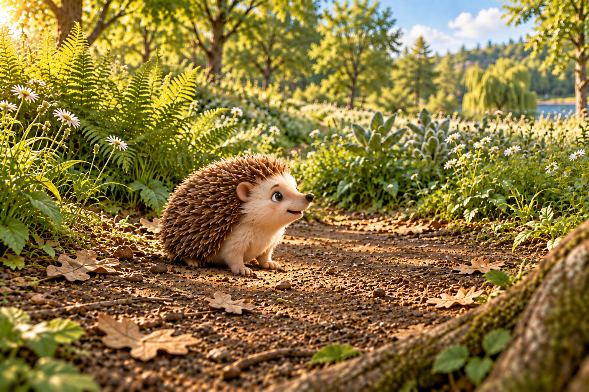
What I See
The corrected portrait faces camera-right toward the established off-camera elder, with an eager open mouth and attentive eyes. Two forelegs attach directly beneath the chest; a hindfoot is visible beneath the rear quills, with the far hindlimb hidden. No extra chest paw or second character is visible. The background matches the other reverse shots, and the bright expression differs clearly from the closed-mouth uncertainty in scene 10-v2. This is the final reader candidate replacing both earlier scene-12 attempts.
Markdown record · Full-resolution image
{kind=link}
Exact Prompt
Image 1 is the clean background. Keep its low camera, soil, left fern, silver-green meadow, tiny distant lake on the right and morning light unchanged. Image 2 supplies ONLY the young brown hedgehog's character design. Add Mr. PinPin ALONE, resting low at CENTRE-LEFT of image 1. His whole compact body and his nose face to the RIGHT, toward his teacher just outside the RIGHT edge of the frame. Leave clear open gaze space to his right. His little muzzle leans forward, ears perked, eyes a little wider and mouth slightly open with an eager question about the quill's history. Soft cream cheeks, warm dark eyes, rounded little ears, small black nose at the snout tip and finely textured brown quills. He is a natural 25 cm hedgehog on four short legs: the front pair beneath his shoulders, rear pair beneath his rump, with paws naturally on the soil and far-side limbs partly occluded by his body. No human arm gesture, no head ornament and no other characters. Keep his scale believable against the existing oak leaves. Finished soft dimensional children's-book rendering, single landscape 1536x1024, no lettering or panels.
References
- shot-10.png: Clean reverse-view portrait plate; retain camera, meadow and lake.
- 03.png: Young PinPin's face and low-body identity only; not the rabbit or dry lake.
Source and Process
Seven additional clean landscape perspectives and thirteen direct character renders extend the five-shot camera study into a complete sixteen-scene adaptation. Three final scenes remain landscape-only. This journal records production order, not just reading order; each prompt and reference is captured before generation.
Reading the Original
The original Russian chapter has fourteen text blocks and two elder portraits. All source dialogue and its meaning are retained in the adapted EN/ES/RU scene text; the original book.json is untouched. The text coverage and light Russian copy-edit are documented separately in chapter-02-copy-edit.json.
The source specifies a visit the day after Crystal Lake's restoration, a conversation outside Master Shipostav's burrow, a bramble staff, the inherited golden quill's mystery, and a promise to meet on the hilltop tomorrow at dawn. Today's chapter ends at sunset, not during the future lesson.
The silver-leaf arch, overhead clearing, canopy view, close portrait cameras, root arrangement and silent leaf-window coda are visual staging for this adaptation. The elder's spectacles echo the source portraits; his body is a natural low hedgehog, without the original images' humanlike limbs or costume.
PinPin uses the published Chapter 1 design: brown quills, cream face, small dark nose and short natural legs. There is no oversized golden head decoration. His magical quill remains in the dialogue; no new spell or magic display is invented here.
Original illustration 1 · Original illustration 2 · Original chapter text
{kind=link}
{kind=link}
The Method, in Order
- Map all source text to sixteen reading scenes and an eleven-page print edition; reserve separate pages for the empty leaf window and the final face reveal.
- Prepare seven new landscape camera directions from clean location plates: leaf level, canopy-up, elder portrait, overhead, visitor portrait, hilltop-up and sunset leaf window. Save prompts before tool calls.
- Generate each clean environment, register PNG plus adjacent Markdown/JSON immediately, and inspect it before using it as another reference.
- Render the first complete two-character scene as the shared cast reference, then place each scene's entire visible cast together directly on its clean landscape. No colored-limb blocking pass.
- Check image scale, direction, identity, face quality, attachment of forelegs/hindlegs, shadows and source timing. Log any rejected attempt rather than overwriting it.
- Integrate all text and images, preserve chapter/language query parameters, verify full-width native mobile scrolling and deliberately composed PDF pages, and publish the completed chapter.
A Brief Adjustment
After scene 4, PinPin's established Chapter 1 identity was added to avoid inheriting the more upright rear pose. Scene 12 then unexpectedly included the elder. That output is rejected; scene-12-v2 uses only the clean plate and PinPin reference. The remaining solo scenes 14 and 16 likewise omit the two-character reference. One hilltop request also failed with a network error before creating an image. Independent visual review then found that scenes 10 and 12-v2 faced away from the elder's established camera-right position in scene 5. Those outputs are rejected for eyeline continuity. Fresh scene-10-v2 and scene-12-v3 keep the clean reverse plate and turn PinPin toward camera-right; rejected outputs remain in this journal.
The Five-Shot Plan
- Under the Silver Leaves Place the camera 8 cm above the meadow soil beside the trail. Look through a loose arch of silver-backed leaves, with the route and distant knoll beyond.
- Looking Up to Listen From beside the burrow, tilt the camera nearly 85 degrees upward through the oak canopy.
- At the Elder's Eye Line Move to 35 cm in front of the left mossy stone, lens 12 cm above the ground, looking obliquely across the root entrance.
- A Quiet Circle Lift the camera 1.8 metres above the clearing and look down at roughly 75 degrees.
- The Visitor's Eye Line Move close to the visitor's position from the elder's side, 12 cm high, with the meadow behind.
- The Hill That Waits From halfway up the path, look 35 degrees upward toward the forked oak and grassy crown.
- An Empty Little Window Return to the same low leaf arch at sunset, camera stationary at 8 cm.
- The Greeting Existing low three-quarter clearing view; separate the two silhouettes clearly.
- Away from the Lake Unchanged low path view with the destination ahead.
- A World Beneath Leaves Low leaf-arch camera, looking through a natural opening at hedgehog height.
- At the Foot of Burrow Hill Keep the meadow approach wide so the two figures establish scale.
- How Did You Know? Reverse angle from the elder's side, looking out across the clearing.
- Yesterday's Magic Return to the original clearing two-shot, now with both faces oriented toward each other.
- The Responsibility of Magic Close low portrait beside the stone, with the root entrance behind.
- The Question in the Quiet Near-overhead clearing, the dialogue seen as a small sheltered encounter.
- A Mystery Since Birth Close low reverse portrait with soft meadow behind.
- A Story in Every Quill Same elder-side portrait, with a small forward lean that changes the conversation's intimacy.
- How Can I Discover It? Same low visitor portrait, eyes and ears more alert.
- Tomorrow on the Hill Wide sunset view of the familiar hill and trail.
- Someone in the Leaves Keep the previous empty leaf-window camera still; the character comes to the camera.
- How Can I Discover It? (Solo Replacement) Same low visitor portrait, eyes and ears more alert.
- A Mystery Since Birth (Eyeline Correction) Low reverse-view portrait with meadow behind; PinPin faces RIGHT toward the elder established at camera-right in scene 5.
- How Can I Discover It? (Eyeline Correction) Low reverse-view portrait with meadow behind; PinPin faces RIGHT toward the elder established at camera-right in scene 5.
Measured, Not Estimated
888.8 seconds summed image-call wall time across 23 registered calls. This includes tool waiting, not just model computation. It excludes preparation, review, publishing and any undocumented earlier work. No monetary cost is exposed by these calls.
Records above follow actual generation time. Reading positions are recorded separately. Every attempt has its own filename and record; a retry is not counted as a successful one-shot.
Unsuccessful Requests
1 failed request(s), separate from successful image-call timings above. These requests did not produce an image.
- 2026-09-15T16:20:25.155Z: plate-11. image generation failed: network error: error sending request for url (https://chatgpt.com/backend-api/codex/images/edits) Failure record and exact prompt
What Carries Forward from Chapter 1
Miguel's successful camera directions specified physical travel and relationships: the lake below the path, two retreats of 50 metres, underwater views looking up, and a wet return to the surface. This pass reuses that spatial approach, with deliberate foreground parallax and a reverse view.
The colored-leg blocking experiment did not reliably preserve facial quality or body posture. It is not part of this pass. Future character renders should begin from the clean landscape, place the whole cast together, and receive a separate visual check of faces, scale, gaze and each fore/hind limb attachment.
Repeated edits appeared to brighten highlights; the cause remains unverified. Short reference chains reduce repeated processing but do not guarantee identical exposure. The later rabbit corrections also show that a convincing image can still contain anatomy errors. Prompt compliance must be inspected, not assumed.